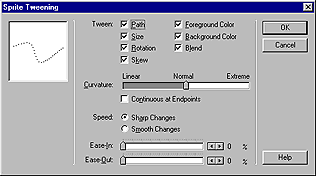

Using Director > Animation > Animation overview
Using Director > Animation > Animation overview |
Animation overview
Animation is the appearance of an image changing over time. The most common types of animation involve moving a sprite on the Stage (tweening animation) and using a series of cast members in the same sprite (frame-by-frame animation).
Tweening is a traditional animation term that describes the process in which a lead animator draws the animation frames where major changes take place, called keyframes. Assistants draw the frames in between. |
|
Frame-by-frame animation involves manually creating every frame in an animation, whether that involves switching cast members for a sprite or manually changing settings for sprites on the Stage. |
Other forms of animation include making a sprite change size, rotate, change colors, or fade in and out.
To specify tweening properties for a sprite, you use the Sprite Tweening dialog box.
To open the Sprite Tweening dialog box:
1 |
Select a sprite. |
2 |
Choose Modify > Sprite > Tweening.
 |